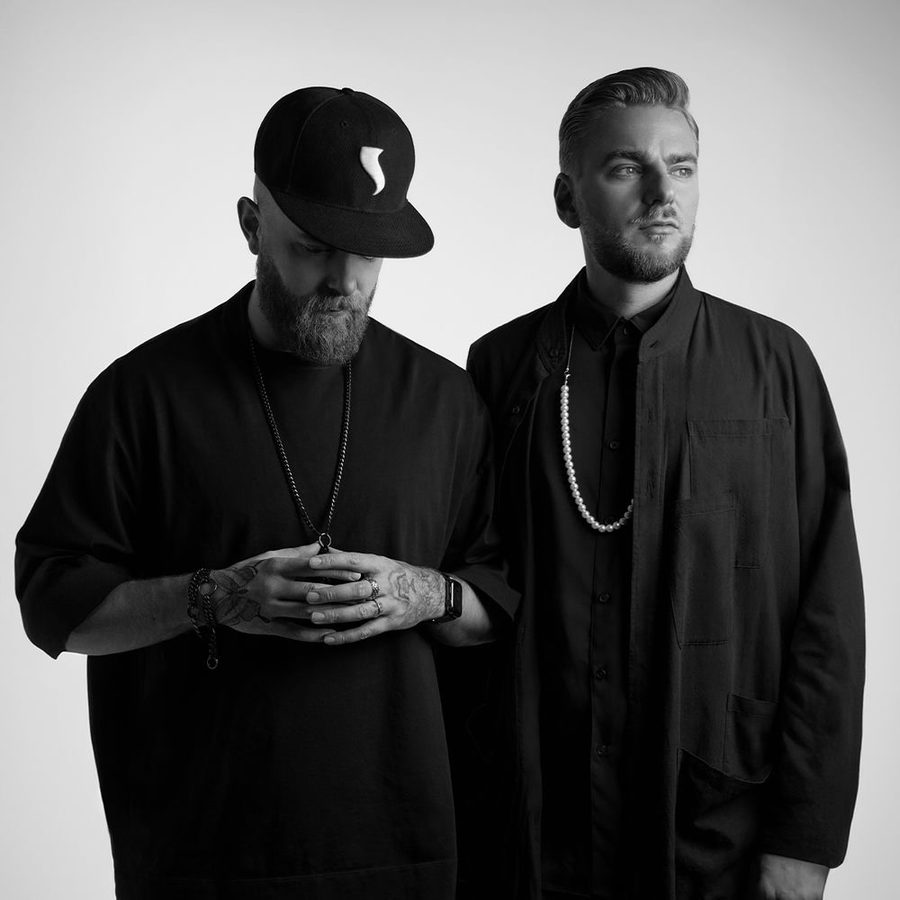
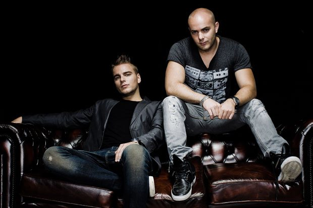

Showtek’s EDM evolution: “Oh man, we’re so glad we changed”


To transition from being titans of a scene as niche, but as lucrative as hardstyle, to successful mainstage EDM jocks, is no mean feat at all; but it was a feat pulled off with aplomb by Dutch brothers Sjoerd and Wouter Janssen, AKA Showtek. Not that it was ever easy.
Several years ago, Showtek were the producers behind some of the most anthemic examples of the pounding BPMs of hardstyle, as well as regularly headlining the Q-dance portfolio of events across Europe and the rest of the world; the hard dance arm of Dutch promoter ID&T, also responsible for the mega Tomorrowland and Sensation events brands. Sjoerd and Wouter were closing the mainstage of the likes of the Defqon.1 Festival, one of the world’s most spectacle-soaked events that hosts 50,000+ punters just outside of Amsterdam every year; as well as hosting their own dedicated ‘X-Qlusive’ events, among many others.
You only need to glance at the sort of events they headlined in 2013 though to see that a musical evolution has taken place. When Data Transmission chatted with the Janssen brothers at Amsterdam Dance Event (ADE) in October, it was just a few hours before they were set to play one of the week’s bigger events for lovers of mainstage EDM, a Friday night party thrown by the smiling Frenchman himself David Guetta and ‘Dirty Dutch’ renegade Chuckie.
The pair had worked behind the scenes for years as producers on mainstage electro and progressive records for the likes of Tiësto and Marcel Woods, eventually growing to feel limited by hardstyle. While still expressing love for the scene they came from, Showtek’s radio hit Cannonball late last year signaled the moment they crossed over. In this year’s DJ Mag Top 100 DJs, they re-entered the poll at the highest new position #27.
However, the initial reaction from their hardstyle fanbase was seething. Showtek opened up about how challenging the transition had been at ADE when they spoke on a panel titled How To Survive as a DJ, alongside Nicky Romero and Sharam, where they tracked their evolution from hardstyle heroes to mainstage drawcards, since coming out of the shadows as co-producers.
After the panel, Data Transmission spoke to the pair.
I’ve watched your evolution over the past two years, and I know you wanted to break free from the feeling that you were being limited or pigeonholed.
Sjoerd: “We were. It felt terrible, especially when you’re working behind the scenes with names like Tiesto and Chris Brown and Marcel Woods, all that music and nobody can see what you’re actually capable of, and what you can do.
So you used to do a lot of work behind the scenes?
Wouter: “We used to. Now we’re fully focused on Showtek, but we’ve made progressive music for ten years, and we ended up falling in love with it even more than with the hard stuff. So why cheat on ourselves and go onstage just for the money? It doesn’t make sense. Maybe people think we crossed for the money, but we would have been selling out if we had kept doing something that we weren’t happy with anymore”.
Sjoerd: “I think we reinvented our sound, and it really gave our career a new boost. I’m not saying we were extremely bored with doing hard dance, no way. But we knew there was going to come a time when we were going to feel limited, and our music desires couldn’t be expressed through that genre. If you do other music, you evolve very quick, and we fell in love. It was like cheating on your girlfriend. That was what that music was like to us.
We made a track with Tiesto called Maximal Crazy, and we coproduced it with him, and he invited us to go and stay with him in Las Vegas during Electric Daisy Carnival. He played that tune, and we saw 160,000 people going off. And we looked at each other, and thought, this is going to be us in three years, this is going to be our music as well, we love this”.
Wouter: “There was that new electro-progressive sound coming in, and we were part of it
Sjoerd: “We had our transition year, which wasn’t easy because there were a lot of fans who didn’t want to see Showtek change. But you’re always better to lose some fans, I think… A lot of our fans, we still have them, because we didn’t lose the Showtek sound. It’s stll there, it’s just a different energy. Even higher I think. And then we gained a lot of new fans, which makes it also interesting because when you come to new areas”.
Wouter: “Oh man, we’re so glad we changed. The first year was really hard… people were throwing beer at shows and booing.
How do you deal with that?
Sjoerd: “It’s hard, but you’re in it together, and you mentally raise a finger, and say ‘okay go home’. Next time we’re there we know he won’t show up because he doesn’t like us, that’s fine, and if he has a hard time dealing with it then that’s their choice. But I’m so happy now with what we’re doing, it feels so comfortable, I can take it easily, I don’t care.
Sjoerd: “We even had a show in Switzerland right in the beginning where we tried to fuse the two sounds together in the one set, and then the owner of the club was like, ‘yeah this is not gonna work, you should stop.’ We even had these times in our career, where we were like, oh my god where is this going… but if you believe in yourself and just follow your heart. And then our single Cannonball came…
Wouter: “That was last December, and we’d had a hard time that year, and then Cannonball came through on the radio, Top 40 in France, Belgium and Holland. And that was a game changer for us. Six weeks and then kaboom, it exploded on the radio too and we had so many new fans, we had new promoters and then the scene changed, our market changed, and we couldn’t control it. That’s the fun part that we’ll never forget – don’t try to control it, just do what you’re strong at and what feels comfortable, and even if it takes another five years, it will always follow you. You just have to go on and believe. And that’s the hard part that comes with making a change – if you can conquer that, then you’re good.
Sjoerd: “We took some risks and we went through some heavy periods, but we always knew deep down that we were doing the right thing. And the dancefloor never lies – last week in France, there were 700 people outside that couldn’t come in anymore, because they were closing the doors. And that’s the perfect sign you want to have as an artist, that you’re going in the right direction. Sometimes to go uphill, you have to go downhill first.

Your gig tonight alongside Guetta and Chucky would have to be a good indication of what you’ve managed to achieve in the past year.
Sjoerd: “David Guetta has really been one of our biggest supporters. Before we’d even met him, he booked us to play several shows after him at Pacha in Ibiza. He was the first DJ playing our new single Booyah. He told us that he literally fell off his chair when he heard it for the first time. He gave it to Pete Tong, and it after that everybody started playing our record. So Guetta was one of the guys who was supporting our new sound from the beginning.”
Something interesting this year is you’re hearing hardstyle being thrown into the sets of a lot of mainstage DJs alongside the house and EDM stuff.
Wouter: “I think that’s great, because it will give that market the chance to be discovered. We’ve been doing our thing for nine years, and it was great, though it’s at a certain BPM so it’s hard to do it differently. But it’s great that people are still doing it, and we still have that touch in our music as well, and we even still drop a hardstyle track sometimes for old time’s sake. And if the record is great, even if it’s a hardstyle record, it should be played.
I really have hope and wish the best too for all the guys in that scene, because we know them personally, we know their struggles too about being limited and stuff. We wish them all the best because they’re great producers”.
You can catch Showtek at Cream’s first show of the year at Liverpool’s Nation on the 1st March 2014 alongside Sander Van Doorn, AN21, Firebeatz, Bingo Players, Tommy Trash, Mat Zo, Cedric Gervais & More. Grab your tickets below:
To buy tickets for this event please visit the events page: Cream tickets from Skiddle.
These tickets are on sale for Cream . Skiddle.com is an official ticket outlet for this event. All credit card purchases you make at Skiddle.com are encrypted through our Secure Server Technology
]]>